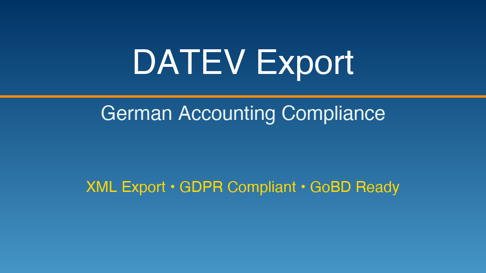

This module provides advanced functionality for exporting invoices and bills to the German DATEV system using the modern XML interface format with full support for digitized receipts.

Export invoices and bills directly to DATEV in modern XML format with full validation support.
Attach and process digitized receipt attachments with automatic PDF merging for multiple documents.
Choose between time-based batch exports or individual document exports with tracking.
Comprehensive validation with error handling and magic button integration for quick resolution.
Data handling complies with GDPR requirements and German data protection standards.
Meets German accounting compliance standards (GoBD - Grundsätze ordnungsmäßiger Buchführung).
DATEV is the leading accounting software platform in Germany, Austria, and Switzerland, used by over 500,000 accounting firms, tax advisors, and companies for comprehensive accounting and tax services. The XML export format is the modern standard for data transfer to DATEV systems, replacing legacy ASCII-based formats with improved validation and enhanced receipt handling.
For technical support, questions, or issues with this module, please contact our support team at support@detalex.de.
Visit our website: https://detalex.de
This module processes financial accounting data in accordance with GDPR (General Data Protection Regulation) and German data protection standards (DSGVO). All data transfers to DATEV comply with applicable data protection requirements. For detailed information about data handling, please review our Privacy Policy.